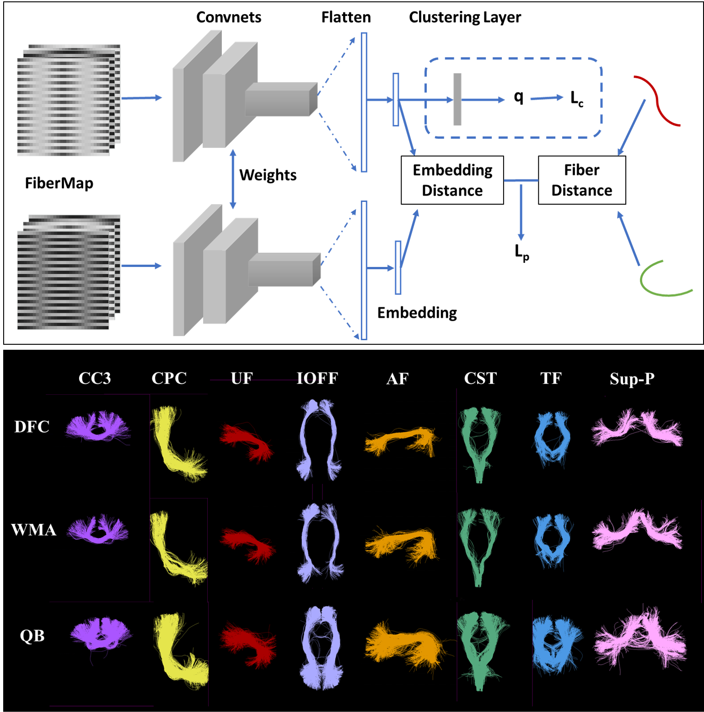

Deep Fiber Clustering: Anatomically Informed Unsupervised Deep Learning for Fast and Effective White Matter Parcellation
- Yuqian Chen1,2
- Chaoyi Zhang 2
- Yang Song 3
- Nikos Makris 1
- Yogesh Rathi 1
- Weidong Cai 2
- Fan Zhang 1
- Lauren J. O'Donnell 1
- 1Harvard Medical School
- 2University of Sydney
- 3University of New South Wales


Overview
White matter fiber clustering (WMFC) enables parcellation of white matter tractography for applications such as disease classification and anatomical tract segmentation. However, the lack of ground truth and the ambiguity of fiber data (the points along a fiber can equivalently be represented in forward or reverse order) pose challenges to this task. We propose a novel WMFC framework based on unsupervised deep learning. We solve the unsupervised clustering problem as a self-supervised learning task. Specifically, we use a convolutional neural network to learn embeddings of input fibers, using pairwise fiber distances as pseudo annotations. This enables WMFC that is insensitive to fiber point ordering. In addition, anatomical coherence of fiber clusters is improved by incorporating brain anatomical segmentation data. The proposed framework enables outlier removal in a natural way by rejecting fibers with low cluster assignment probability. We train and evaluate our method using 200 datasets from the Human Connectome Project. Results demonstrate superior performance and efficiency of the proposed approach.
Video
(contains audio w/ subtitles)
Datasets
- Currently, training dataset is available upon request (email: fzhang@bwh.harvard.edu).
- Trained model and one test sample can be downloaded here.
BibTeX
If you find our project useful in your research, please cite:
@inproceedings{chen2021deep,
title={Deep Fiber Clustering: Anatomically Informed Unsupervised Deep Learning for Fast and Effective White Matter Parcellation},
author={Chen, Yuqian and Zhang, Chaoyi and Song, Yang and Makris, Nikos and Rathi, Yogesh and Cai, Weidong and Zhang, Fan and O’Donnell, Lauren J},
booktitle={International Conference on Medical Image Computing and Computer-Assisted Intervention},
pages={497--507},
year={2021},
organization={Springer}
}
}